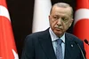
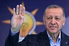

তুরস্কের প্রেসিডেন্ট রিসেপ তাইয়েপ এরদোয়ান ও ফার্স্ট লেডি এমিন এরদোয়ানফাইল ছবি: রয়টার্স
তুরস্কের রাজনীতিতে দুই দশক ধরে আধিপত্য ধরে রেখেছেন রিসেপ তাইয়েপ এরদোয়ান। প্রথমে ছিলেন দেশটির
প্রধানমন্ত্রী, পরে প্রেসিডেন্ট। গতকাল রোববার তৃতীয় মেয়াদে দেশটির প্রেসিডেন্ট নির্বাচিত হয়েছেন তিনি।
আগামী পাঁচ বছর আন্তর্জাতিক অঙ্গনে গুরুত্বপূর্ণ অবস্থান নিয়ে চলা দেশটির নেতৃত্ব দেবেন
এরদোয়ান।
নির্বাচনের ফলাফল জানার পর রাজধানী আঙ্কারার প্রান্তে প্রেসিডেন্ট প্রাসাদের বাইরে উল্লসিত সমর্থকদের
উদ্দেশে বক্তব্য দেন এরদোয়ান। এ সময় তিনি বলেন, ‘আজ সাড়ে আট কোটি মানুষের পুরো জাতির জয় হয়েছে।’ একই
সঙ্গে ঐক্যের ডাক দিয়েছেন এরদোয়ান।
এরদোয়ানের এমন ঐক্যের আহ্বান অনেকটাই ফাঁপা শুনিয়েছে। এর কারণ, প্রতিদ্বন্দ্বী কেমাল কিলিচদারওলুর
বিরুদ্ধে একের পর এক তোপ দেগেছেন এরদোয়ান। এমনকি তিনি কুর্দি নেতাদের জেলে ভরার কথা বলেছেন।
এবারের প্রেসিডেন্ট নির্বাচন নিয়ে কম নাটকীয়তা হয়নি। ১৪ মে তুরস্কে প্রথম দফার ভোট গ্রহণ হয়। সেদিন ৪৯
দশমিক ৫২ শতাংশ ভোট পান এরদোয়ান। কেমাল পান ৪৪ দশমিক ৮৮ শতাংশ ভোট। তুরস্কের নির্বাচনী আইনে বলা
আছে,কোনো প্রার্থী ৫০ শতাংশ ভোট না পেলে নির্বাচন দ্বিতীয় দফায় গড়াবে।
গতকাল ছিল দ্বিতীয় দফার ভোট গ্রহণ। এবার ৯৯ দশমিক ৮৫ শতাংশ ভোট গণনা শেষে এরদোয়ান পেয়েছেন ৫২ দশমিক ১৬
শতাংশ; আর কেমাল পেয়েছেন ৪৭ দশমিক ৮৪ শতাংশ ভোট। এরপরই এরদোয়ানকে নির্বাচনে বিজয়ী ঘোষণা করা হয়।
৬৯ বছর বয়সী প্রেসিডেন্ট এরদোয়ান আঙ্কারায় উল্লাসরত সমর্থকদের সামনে হাজির হয়ে ঐক্যের ডাক দিয়েছেন।
কিন্তু নির্বাচনের ফল নিয়ে এরদোয়ানবিরোধী শিবির এখনো নিশ্চুপ। স্বীকার কিংবা প্রত্যাখ্যান—কোনোটাই
করেনি।
বরং কেমাল কিলিচদারওলুর অভিযোগ, তুরস্কের সাম্প্রতিক ইতিহাসে এই নির্বাচনে সবচেয়ে বেশি কারচুপি হয়েছে।
প্রেসিডেন্ট এরদোয়ানের দল তাঁর বিরুদ্ধে রাষ্ট্রের সব কটি প্রতিষ্ঠানকে ব্যবহার করেছে।
এবারের নির্বাচনে ৫২ শতাংশের কিছু বেশি ভোট পেয়ে আরও পাঁচ বছর দেশ শাসন করবেন এরদোয়ান। কেমালের সঙ্গে
ভোটের ব্যবধান ছিল বেশ কম। এর অর্থ হলো, তুরস্কের প্রায় অর্ধেক ভোটার ব্যালটে এরদোয়ানের কর্তৃত্ববাদী
দৃষ্টিভঙ্গি সমর্থন করেননি।
আরও পড়ুন
এরদোয়ান দুই দশক ধরে তুরস্কের রাজনীতিতে আধিপত্য যাঁর |
 |
এমনকি তুরস্কের ইতিহাসে এবারই প্রথম প্রেসিডেন্ট নির্বাচন দ্বিতীয় দফায় গড়িয়েছে। নির্বাচন এবং ভোটের
ফলাফলের এই চিত্র তুরস্কের সমাজে বিদ্যমান বিভাজনের দৃশ্যপট আমাদের সামনে তুলে ধরছে।
ফলাফল ঘোষণার পর প্রাসাদের সামনে জড়ো হওয়া ৩ লাখের বেশি সমর্থকদের উদ্দেশে এরদোয়ান বলেন, ‘এটা তুরস্কের
ইতিহাসে সবচেয়ে গুরুত্বপূর্ণ নির্বাচন। এতে শুধু আমরাই জয় পাইনি, পুরো তুরস্ক জিতেছে।’ সেই সঙ্গে
কেমালকে কটাক্ষ করে এরদোয়ান বলেন, ‘বাই, বাই, বাই কেমাল’।
এর আগে এরদোয়ান অভিযোগ করেছিলেন, তাঁকে ঠেকাতে কেমালের দল পার্লামেন্টে অনেক আসন জোটসঙ্গীদের ছেড়ে
দিয়েছে। প্রকৃতপক্ষে পার্লামেন্টে তাঁদের আসনসংখ্যা ১২৯-এ নেমে এসেছে। সেই সঙ্গে বিরোধীদের সমকামী
সমর্থনের নীতির তীব্র সমালোচনা করেছেন এরদোয়ান। বিরোধীদের এই নীতি সম্পর্কে তিনি বলেন, এটা তাঁর পরিবার
সম্পর্কে ধারণার ব্যত্যয়। তাই তিনি এই নীতি সমর্থন করতে পারেন না।
এক শতকের চার ভাগের একভাগ সময় বা ২৫ বছর ক্ষমতায় থাকছেন এরদোয়ান। এটা উদ্যাপন করতে পুরো তুরস্ক থেকে
আঙ্কারায় ছুটে এসেছেন এরদোয়ানের সমর্থকেরা। জাতীয় পতাকা হাতে মিছিল করেছেন। উৎসবে মেতে যেন এক রাতের
জন্য তুরস্কের অর্থনৈতিক দুরবস্থার কথা সবাই ভুলে গেছে।
এটা তুরস্কের ইতিহাসে সবচেয়ে গুরুত্বপূর্ণ নির্বাচন।
এতে শুধু আমরাই জয় পাইনি, পুরো তুরস্ক জিতেছে।
—রিসেপ তাইয়েপ এরদোয়ান, তুরস্কের প্রেসিডেন্ট।
এরদোয়ানের সমর্থক সেয়হান সংবাদমাধ্যমকে বলেন, ‘দেশে কেউ ক্ষুধার্ত নয়। আমরা সবাই এরদোয়ানের অর্থনৈতিক
নীতি নিয়ে খুশি। আমাদের ধারণা, আগামী পাঁচ বছরে তিনি (এরদোয়ান) আরও ভালো করবেন।’
আরও পড়ুন
নারীদের মধ্যে এখনো জনপ্রিয় এরদোয়ান তুরস্কের প্রেসিডেন্ট রিসেপ তাইয়েপ এরদোয়ান |
 |
তবে অর্থনীতির গতি ফেরানোর গুরুত্ব উপলব্ধি করতে পেরেছেন এরদোয়ান। তিনি বলেছেন, ‘মূল্যস্ফীতি মোকাবিলা
করা এখন তুরস্কের জন্য সবচেয়ে জরুরি বিষয় হয়ে দাঁড়িয়েছে।’ কিন্তু প্রশ্ন হলো, মূল্যস্ফীতি নিয়ন্ত্রণ
করতে এরদোয়ান প্রস্তুত আছেন কি না? কেননা, ইতিমধ্যে এর বার্ষিক হার ৪৪ শতাংশে পৌঁছেছে। দেশের প্রায়
প্রত্যেকের জীবনে উচ্চ মূল্যস্ফীতির প্রভাব পড়েছে।
রিসেপ তাইয়েপ এরদোয়ান শুধু নিজ দেশের
উন্নয়নে ভূমিকা রাখেননি; তিনি আরব ও মুসলিম
বিশ্বকে সমর্থন জুগিয়ে যাচ্ছেন।
—আলা নাসার, তিউনিসিয়া থেকে তুরস্কে আসা এরদোয়ান সমর্থক।
বাড়তি দামে খাবার কিনতে হচ্ছে তুরস্কবাসীকে। বেড়ে গেছে বাড়িভাড়া। নিত্যপণ্যের দামও আকাশছোঁয়া। এরদোয়ানের
প্রাচীনপন্থী অর্থনৈতিক নীতি ও সুদের হার বাড়াতে আপত্তির কারণে তুরস্কে এ পরিস্থিতি দেখা দিয়েছে।
মার্কিন ডলারের বিপরীতে লিরার রেকর্ড দরপতন ঘটেছে। বৈদেশিক মুদ্রার ক্রমবর্ধমান চাহিদার চাপ সামলাতে
তুরস্কের কেন্দ্রীয় ব্যাংক রীতিমতো হিমশিম খাচ্ছে।
ইস্তাম্বুলের কচ বিশ্ববিদ্যালয়ের অর্থনীতির অধ্যাপক সেলভা দেমিরালপ সতর্ক করে বলেন, নিম্ন সুদের হার
অব্যাহত রাখলে বিকল্প হিসেবে পুঁজি নিয়ন্ত্রণের কৌশল বেছে নিতে হবে। এরদোয়ান নিজেও এমন ইঙ্গিত
দিয়েছেন।
নিম্ন সুদের হার অব্যাহত রাখলে বিকল্প হিসেবে
পুঁজি নিয়ন্ত্রণের কৌশল বেছে নিতে হবে।
এরদোয়ান নিজেও এমন ইঙ্গিত দিয়েছেন।
—সেলভা দেমিরাপ, ইস্তাম্বুলের কচ ইউনিভার্সিটির অর্থনীতির অধ্যাপক।
তুরস্কের এই অর্থনীতিবিদের মতে, নির্বাচনে এরদোয়ানের সমর্থকেরা অর্থনীতিকে তুলনামূলক কম গুরুত্ব
দিয়েছেন। এর বদলে নেতা হিসেবে বিশ্বে এরদোয়ানের অবস্থান, কুর্দি ‘সন্ত্রাসীদের’ দমনে তাঁর কঠোর
অবস্থান—এসব বিষয় বেশি গুরুত্ব পেয়েছে।
আরও পড়ুন
তৃতীয় মেয়াদে তুরস্কের প্রেসিডেন্ট নির্বাচিত এরদোয়ান |
 |
সন্ত্রাসবাদে মদদ দেওয়ার অভিযোগ তুলে এরদোয়ান তাঁর বিরোধীদের তীব্র সমালোচনা করেছেন। এমনকি তুরস্কের
দ্বিতীয় বৃহত্তম বিরোধী দল এইচডিপির একজন প্রভাবশালী সাবেক নেতা সেলাহাতিন ডেমিরতাসকে মুক্ত করে দেওয়ার
প্রতিশ্রুতি দেওয়ায় তিনি বিরোধীদের তুলোধোনা করেছেন। তুরস্কের রাজনীতিতে এইচডিপি কুর্দিপন্থী হিসেবে
পরিচিত।
ইউরোপীয় মানবাধিকার আদালত সেলাহাতিন ডেমিরতাসকে মুক্ত করে দেওয়ার আদেশ দিয়েছেন। কিন্তু এরদোয়ানের
প্রশাসন তাঁকে মুক্তি দেয়নি। ২০১৬ সাল থেকে এই রাজনীতিক কারাবন্দী। এরদোয়ান ঘোষণা দিয়ে রেখেছেন, তিনি যত
দিন ক্ষমতায় থাকবেন, সেলাহাতিন ডেমিরতাসকে তত দিন বন্দিজীবন কাটাতে হবে।
এ ছাড়াও এরদোয়ানের সামনে বড় চ্যালেঞ্জ ছিল গত ফেব্রুয়ারির ভূমিকম্পে প্রাণহানি ও ক্ষয়ক্ষতি। তিনি
ক্ষতিগ্রস্ত এলাকাগুলোর পুনর্গঠনে জোর দেওয়ার প্রতিশ্রুতি দিয়েছেন। যুদ্ধের কারণে তুরস্কে আশ্রয় নেওয়া
লাখ লাখ সিরীয় শরণার্থীকে নিজ দেশে ‘স্বেচ্ছায়’ ফেরানোর প্রক্রিয়ায় অগ্রাধিকার দেবেন তিনি।